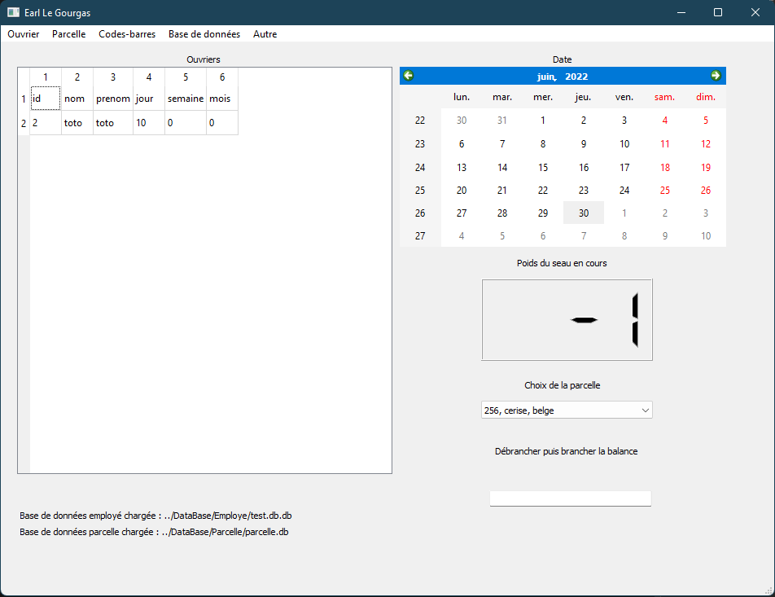

Interface
- class Interface.Ui_MainWindow
Class représentant la fenêtre principale du programme
- Paramètres
MainWindow (MainWindow) – fenetre principale
- Ivar
tous les elements graphiques
- Variables
- actionscanner()
Cette fonction est appelé lors du scan d’un code barre
- Renvoie
None
- ecire(msg: str)
Ecrit un message dans le champs info de l’interface
- Paramètres
msg (str) –
- Renvoie
None
- getParcelle()
Retourne la parcelle selectionnée dans la combobox
- Renvoie
parcelle
- Type renvoyé
str
- lancerFenetre(id: int)
Lance la fenetre numero id:
1 : afficher_ouvrier -> choisir un ouvrier à afficher
2 : afficher_ouvrier_liste -> affiche la liste des ouvriers
3 : afficher_ouvrier_tableau -> affiche le tableau d’un ouvrier
4 : afficher_parcelle_liste -> affiche la liste des parcelles
5 : ajout_conges -> creer des congés pour un ouvrier donné
6 : ajout_employe -> creer une nouvelle entrée pour un ouvrier
7 : ajout_parcelle -> creer une nouvelle entrée pour un parcelle
8 : ajout_travail -> creer une periode de travail pour un ouvrier donné
9 : creer_code -> creer des codes barres
10 : modifier_parcelle -> modifier une parcelle deja créée
11 : supprimer_employe -> supprimer un ouvrier de la base de données
12 : supprimer_parcelle -> supprimer une parcelle de la base
13 : creer_base -> creer une base de données
14 : actionReset -> reset la base de données ouverte
15 : actionContenant -> prend en compte le poids du contenant
16 : actionPoids -> faire une moyenne des poids d’un contenant plein
17 : actionStat -> generer des statistiques
18 : select_poids -> choisir un poids fixe lorsque la balance ne fonctionne pas par exemple- Paramètres
id (int) – numero de fenetre
- Renvoie
None
- resetCode()
Reset tous les fichiers de sauvegarde des codes barre
- Renvoie
None
- retranslateUi(MainWindow)
Ecrit tous les texts dans les emplacements graphiques
- Paramètres
MainWindow (MainWindow) – fenetre principale
- Renvoie
None
- setupUi(MainWindow)
Initialise tout le programme
- Paramètres
MainWindow (Mainwindow) – fenetre principale
- Renvoie
None
- update()
Fonction qui s’execute toutes les 500ms pour mettre a jour les données et l’interface graphique
- Renvoie
None
{kind=link}